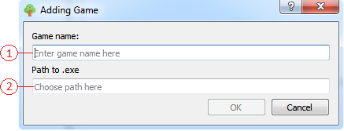
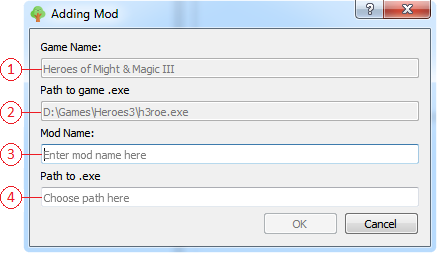

Добавление игры
Для открытия окна добавления игры можно воспользоваться либо основным меню приложения, либо всплывающем(контекстным) меню виджета отображения списка игр/модов.
Также можно воспользоваться механизмом drag&drop.
Окно добавления игры.

- Строка ввода названия игры. Здесь вводится название игры.
- Строка выбора пути до исполняемого .ехе файла. В открывшемся окне выберите .ехе файл для добавления его в качестве файла для запуска игры.
Добавление мода
Для добавления мода неободимо воспользоваться всплывающем(контекстным) меню виджета отображения списка игр/модов.

- Строка с названием игры к которой добавляется мод.
- Строка с исполняемом .ехе файлом этой игры.
- Строка ввода названия мода. Здесь вводится названия мода.
- Строка выбора пути до исполняемого .ехе файла. В открывшемся окне выберите .ехе файл для добавления его в качестве файла для запуска мода.